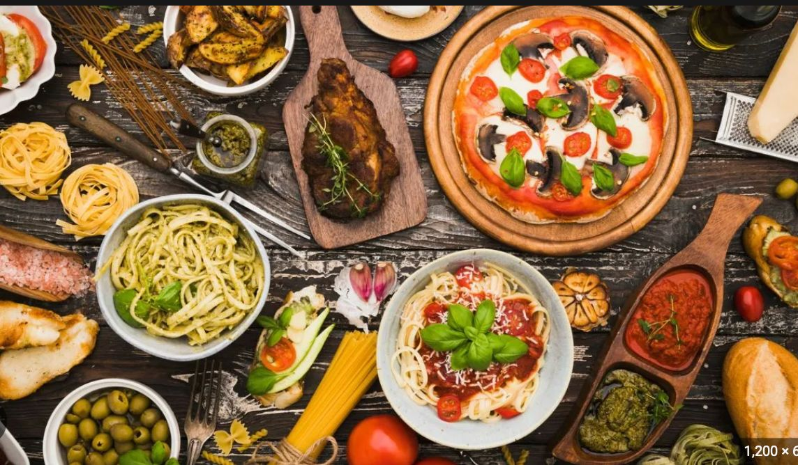
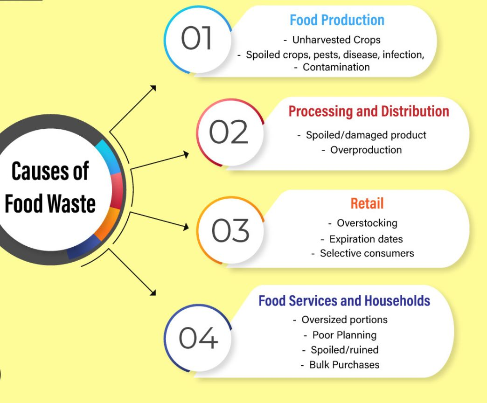

Introduction
Understanding Food Wastage
Food wastage is a pressing global issue that impacts both the environment and society. Every year, millions of tons of food are wasted at various stages of the supply chain, contributing to greenhouse gas emissions and resource depletion.
This webpage aims to shed light on the causes, effects, and solutions for this critical problem.
Food wastage stands as a monumental challenge in today's world, affecting not just our dinner tables but the entire global ecosystem. Each year, staggering amounts of food are discarded across the supply chain, encompassing production, distribution, and consumption phases. This squandering not only represents a loss of precious resources but also carries profound implications for our environment and society.
This page aims to unravel the intricate layers of this issue. We delve into the reasons behind this wastage, investigate its pervasive repercussions on the environment, economies, and societies, and advocate actionable solutions. By fostering awareness and advocating change, we strive to curtail this problem, fostering a more sustainable, equitable world for all.
Causes of Food Wastage
Food wastage occurs at different stages: from production and processing to distribution and consumption. Some primary causes include overproduction, inefficient distribution systems, consumer behavior, and strict cosmetic standards set by retailers.
1. Overproduction and Agricultural Practices:
Agriculture often yields more than demanded due to unpredictable factors like weather conditions and market variations. This surplus, coupled with strict aesthetic standards, leads to substantial portions of crops being left unharvested or discarded.
2. Inefficient Distribution Systems:
Faulty logistics and distribution networks contribute significantly. Transportation issues, inadequate storage facilities, and challenges in matching supply with demand lead to food being lost before it reaches consumers.
3. Food Service Industry
Restaurants, cafeterias, and catering services also contribute to wastage through over-preparation, unsold food, and plate waste.
Understanding these diverse causes is crucial in devising effective strategies to combat food wastage and foster a more sustainable food ecosystem.
Impact of Food Wastage
The impact of food wastage is vast. It leads to environmental degradation, resource wastage, and social issues. It contributes significantly to greenhouse gas emissions and global warming. Economically, it represents a loss of resources and financial investment.
Food wastage has multifaceted impacts, stretching across environmental, social, and economic spheres.
1.Environmental Impact:
Food wastage significantly contributes to environmental degradation. Rotting food in landfills releases methane, a potent greenhouse gas that greatly contributes to climate change. Moreover, the extensive resources used in food production—water, energy, and land—are wasted when food is discarded.
2.Social and Humanitarian Implications:
Food wastage raises ethical concerns, especially when millions suffer from hunger. This stark contrast between abundance and scarcity makes it a social justice issue.
3.Economic Consequences:
Food wastage incurs substantial economic losses for farmers, consumers, and the economy at large. Unsellable produce, increased consumer expenditure, and the costs incurred in production, transportation, and storage contribute to economic strains.
Solutions
Several solutions can be adopted to reduce food wastage. These include better inventory management, improved distribution systems, consumer education on proper food handling, and supporting initiatives that rescue and redistribute surplus food.
Various strategies and approaches can significantly reduce food wastage at different levels of the supply chain.
1.Improved Inventory Management:
Efficient tracking of inventory can help reduce overproduction and food losses by matching supply with demand.
2.Enhanced Distribution Systems:
Better logistics and transportation strategies can minimize food losses during transit and storage.
3.Consumer Education and Awareness:
Informing consumers about proper food storage, handling, and the impact of wastage can reduce household food wastage.
4.Support for Food Rescue Initiatives:
Backing programs that collect surplus food and redistribute it to those in need can significantly reduce wastage.
Call to Action
OUR NUMBERS:
+91-9502944732,+91-8985593555
Individually and collectively, we can make a difference in reducing food wastage and creating a more sustainable future.
Spread Awareness: Share this information with friends and family to raise awareness about the issue.
Support Local Initiatives: Get involved with or support organizations and initiatives working to combat food wastage in your community.
Adopt Sustainable Practices: Make simple changes in your own habits, such as buying what you need, proper storage, and supporting businesses committed to reducing waste.
Advocate for Change: Encourage local businesses and policymakers to adopt more sustainable practices to minimize food wastage.